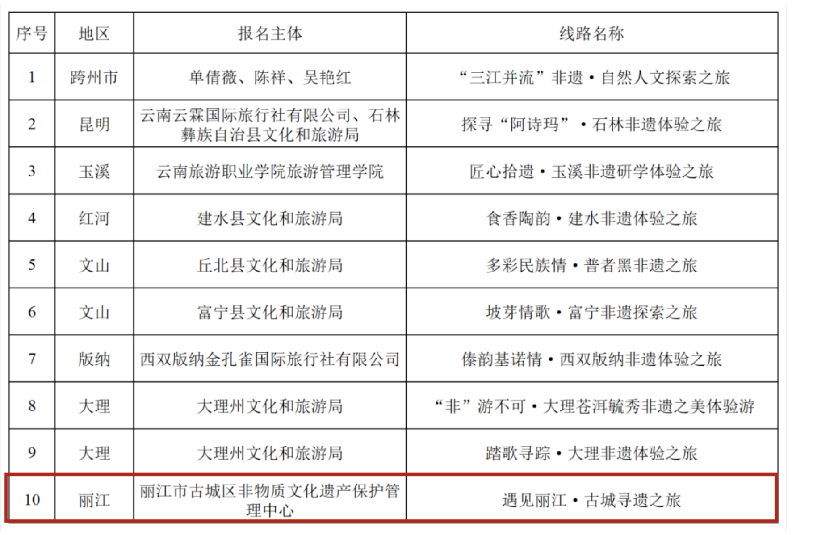
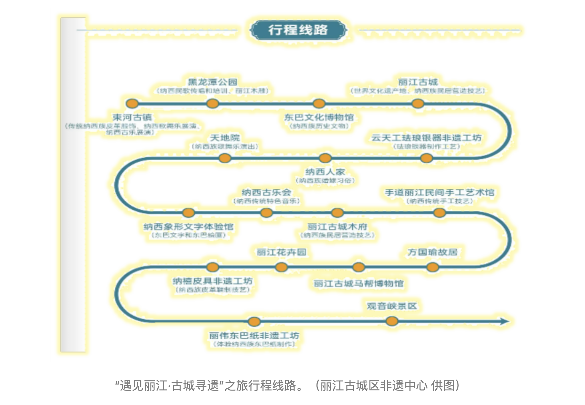

近日，云南省文化和旅游厅发布了10条非遗特色旅游线路。其中，由丽江市古城区非物质文化遗产保护管理中心申报的“遇见丽江·古城寻遗”之旅成功入选。
“遇见丽江·古城寻遗”之旅入选云南非遗特色旅游线路
 “遇见丽江·古城寻遗”之旅串联了从古城区束河古镇到观音峡景区的丰富非遗资源，涉及17个景区（景点）、传习馆、 非遗工坊点位。该条线路充分体现了传承、体验、融合的特点，将非遗项目与景区游览、民族风情、历史文化、传统美食 等相结合，为游客提供沉浸式非遗体验。游客可以在束河古镇感受纳西族传统皮革制作的魅力，在丽江古城观看民族歌舞 乐展演，在云天工珐琅银器非遗工坊亲手制作一件心仪的珐琅银器，还可以沉浸在纳西古乐中穿越千年时光。  “古城区将继续深入挖掘和整理非遗资源，打造更多具有地方特色的非遗旅游线路和产品，为游客提供更好的旅游体验。” 古城区非遗中心主任李广表示。近年来，古城区深入推进非遗与旅游融合发展，在充分整合传统非遗资源的基础上， 进行资源创新、形式创新、服务创新、客群创新等，将非遗嵌入旅游产业发展中，进一步推动了非遗与旅游在更广范围、 更深层次、更高水平的融合发展。